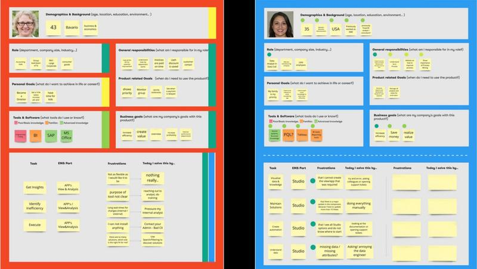
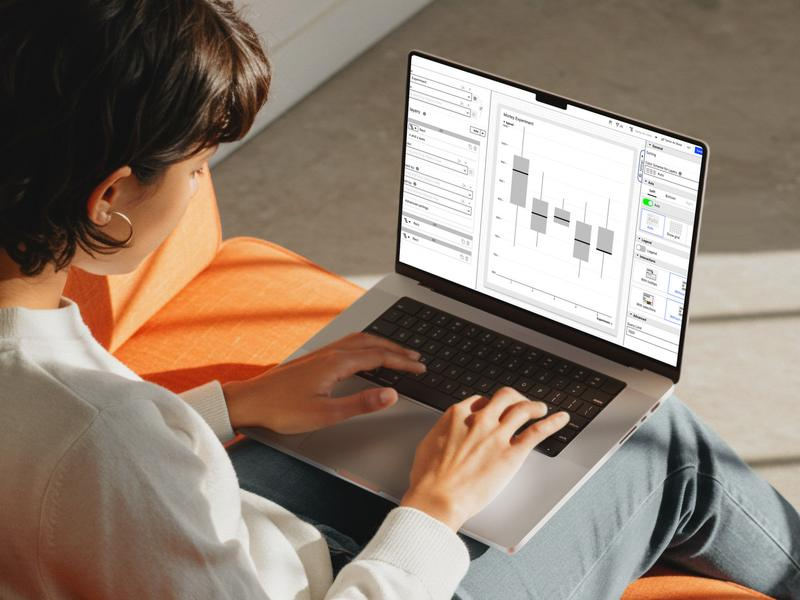
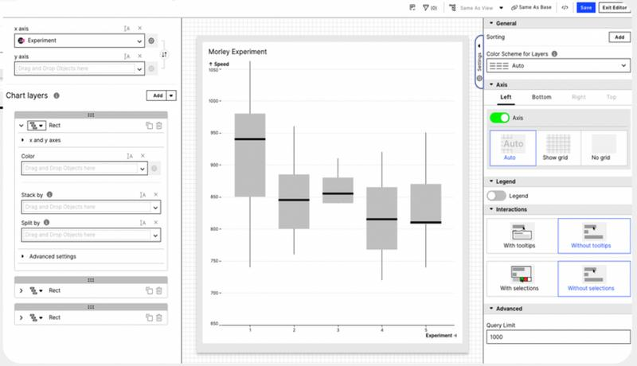

To create a component in Studio, most components required over 20 lines of YAML to configure — a "code-like" experience that lacked visual guidance. As a result, users frequently reached out for support with specific configuration issues

From complexity to a plan
-
Solution discovery — user interview & benchmarking
To deeply understand the problem, we ran user interviews with two target users, discussing their current workflow and early low-fidelity concepts of the Visual Editor

-
Prioritisation & roadmap — turning complexity into a plan
I documented the user interaction, data format, and advanced features for each component to give an overview of their content. This enabled a discussion with the project manager and engineers to establish a timeline and make feasibility easier to see
-
Design & test — fast iterations, real feedback
For each prioritised feature I developed user cases and journeys, then moved quickly into user flows and information architecture. I built interactive prototypes directly in Figma — without needing developer support
Each design iteration took less than a week from prototype to tested. I ran continuous rounds of user testing, redesigning based on what I observed until the feedback validated the hypothesis. Speed without cutting corners — the goal was to learn fast, not ship fast
-
Test & refine — staying responsive post-launch
We established monthly group feedback sessions with users to surface issues early and capture evolving needs. Each session produced actionable points that fed directly back into the sprint cycle — keeping the team responsive without losing focus

The Visual Editor
The redesigned editor replaces YAML configuration with visual panels — chart layers, encodings, axes, legend, and interactions — so building a component becomes a guided, point-and-click experience

- Building a component now happens through guided visual panels in a few clicks, instead of writing 20+ lines of YAML in the legacy editor
- Refining a chart no longer means editing code and re-rendering — axis, legend, and interaction settings update in real time
- Analysts and business users can configure components on their own, which reduces support requests and improves accessibility across roles